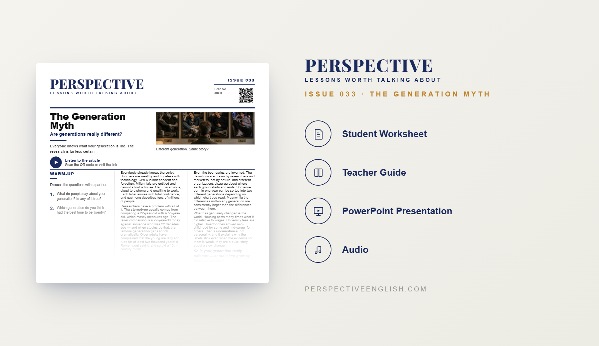

ISSUE 033
Generation Stereotypes ESL Lesson
The Generation Myth
A ready-to-teach ESL lesson exploring generational stereotypes, Gen Z, Millennials, Baby Boomers, age labels, identity and the generation gap, with reading, listening, vocabulary, discussion and critical-thinking activities for B1–B2 English learners.
Collection 06 includes Issues 031–035.

LESSON PREVIEW

ABOUT THIS LESSON
About This Generation Stereotypes ESL Lesson
Baby Boomers, Generation X, Millennials and Gen Z are often described as if each generation has its own personality. One group is called hardworking, another entitled, another anxious or obsessed with technology. These labels can feel convincing because we hear them everywhere.
This B1–B2 Generation Stereotypes ESL lesson asks whether those labels really tell us very much about individual people. Students consider how culture, economics, technology, family and personality can shape someone's values just as much as the generation they were born into.
The lesson combines an original reading and audio with vocabulary, comprehension, discussion questions and critical-thinking activities. Students use English to discuss Gen Z, Millennials, Baby Boomers, age stereotypes, identity, workplace assumptions, technology and the generation gap.
FROM THE ARTICLE
WHAT'S INCLUDED
What's Included in the Generation Stereotypes Lesson?
- Magazine-style B1–B2 ESL student worksheet
- Original generational stereotypes reading and audio recording
- Vocabulary and reading comprehension activities
- Gen Z, Millennials and Baby Boomers discussion questions
- Generational stereotypes critical-thinking activity
- Critical-thinking activities about age, identity and the generation gap
- Speaking challenge and writing prompt
- Teacher guide and complete answer key
- Ready-to-use classroom presentation
GET THE COMPLETE LESSON
Ready to Teach The Generation Myth?
Get the complete Generation Stereotypes ESL lesson individually or save with Perspective Collection 06.
Secure checkout and instant digital delivery through Payhip.